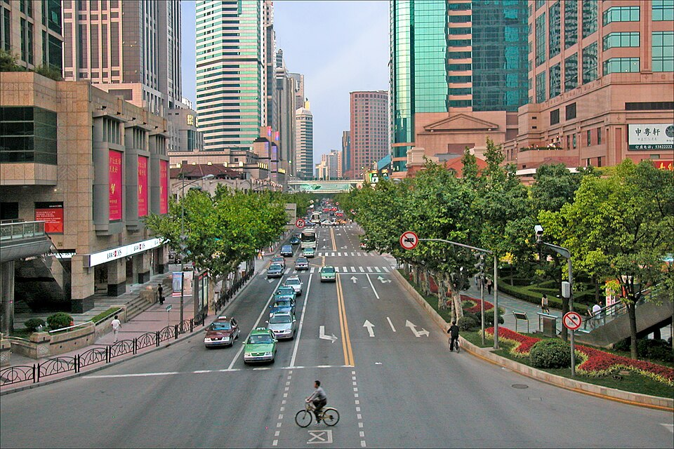

Та же остановка, другая улица
还是第2站，另一条街
Хуайхай, бывшая авеню Жоффр淮海路，从前的霞飞路
Хуайхай. Рядом со старым французским сеттльментом, не одна точка на доме.
淮海中路。靠近旧法租界，不是某一栋门牌。

Улица Хуайхай раньше называлась авеню Жоффр. Старое китайское имя — 霞飞路. В 1920–1940-е здесь говорили по-русски. Были газеты, школы, театры, магазины. Выступал Александр Вертинский.
Мне это понятно без экскурсовода. Я сама каждый день то на китайском, то на русском.
SUIS Peiming, где я была в 6 классе, стоит в Цзинъане, у старого французского сеттльмента. От той школы до этих улиц другой город не нужен.
Хуайхай длинная, целиком в одну булавку не лезет. Точку ставлю у Южной Шэньси: оттуда пешком до обоих храмов.
淮海路以前叫霞飞路。1920到1940年代，这里听得见俄语。有报纸、学校、戏院、店铺。亚历山大·维尔京斯基在这儿唱过。
这个我不用导游也懂。我自己每天一会儿中文，一会儿俄文。
我在静安的 SUIS Peiming 读过书，就在旧法租界旁边。地图上的点夹在我已经上过学的地方中间，不是从别人的书里搬来的城市。
淮海路很长。钉子我钉在陕西南路路口，好走路去教堂。整条街塞不进一个点。